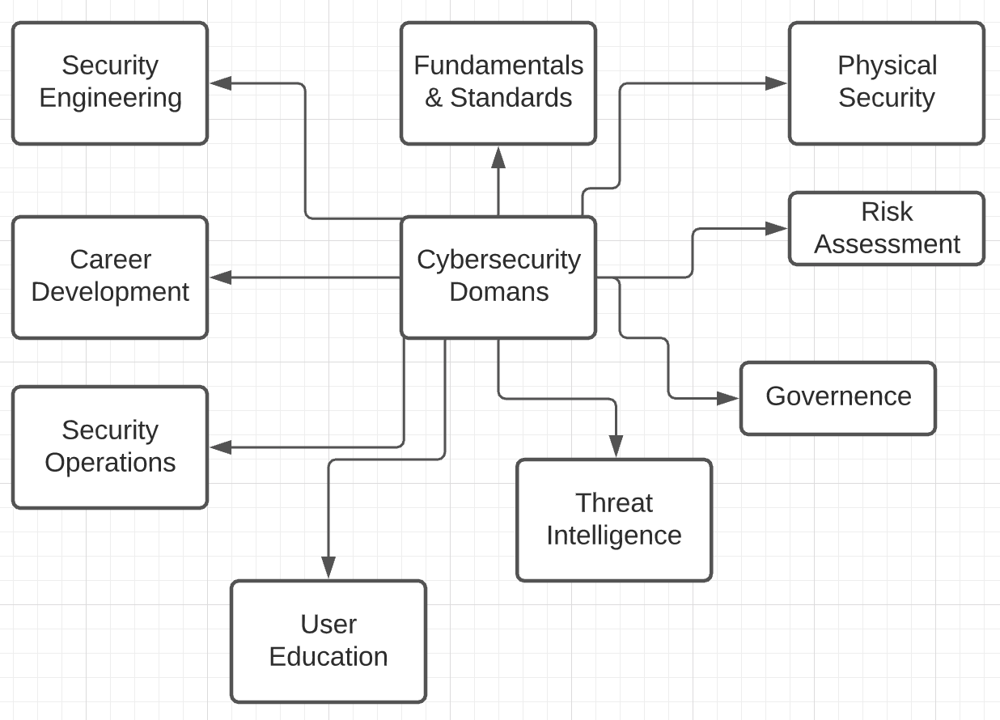
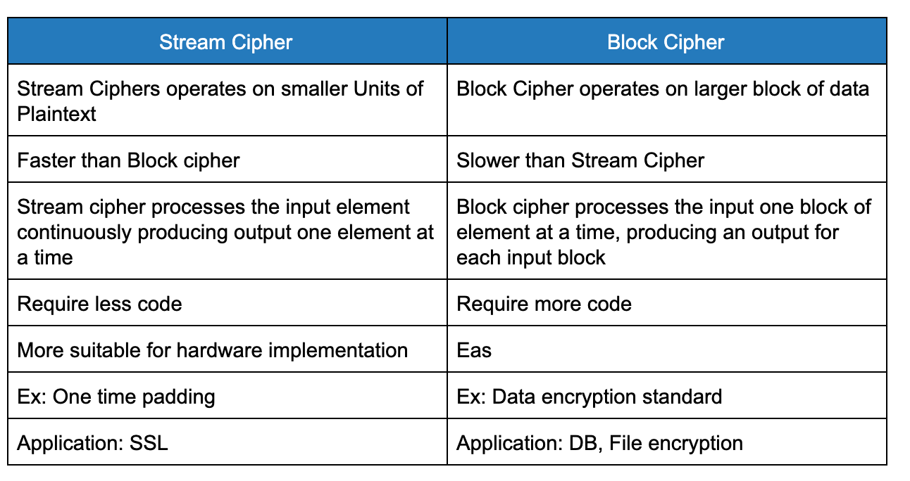
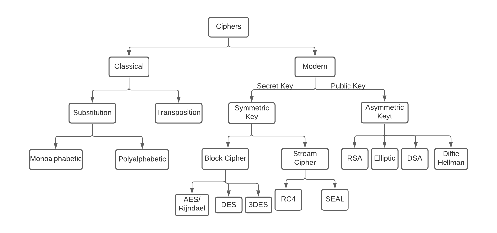
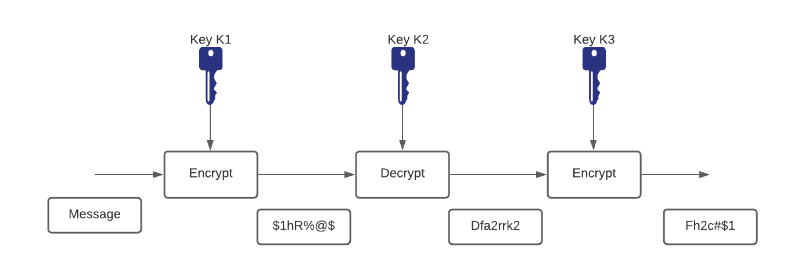
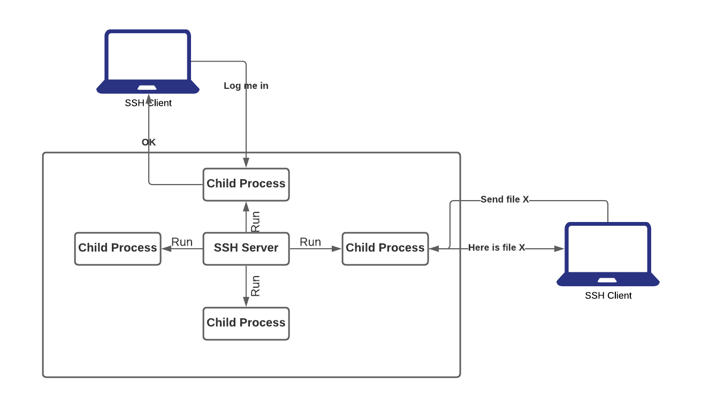
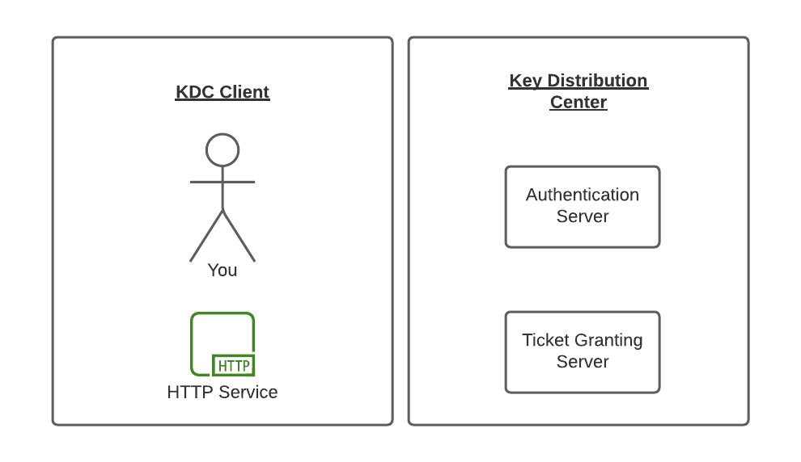
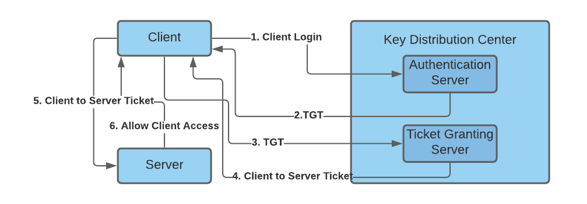
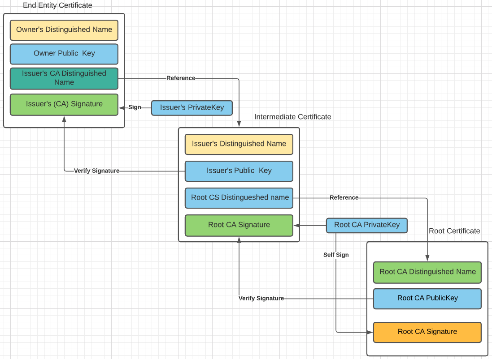

第一部分：基礎知識
SRE 的安全性概述介紹
- 仔細觀察會發現，網站可靠性工程（Site Reliability Engineering, 簡稱 SRE）與安全工程都關心系統的可用性。
- 像是錯誤的版本發布、容量不足及錯誤配置，都可能讓系統無法使用（至少是暫時性的）。
- 破壞用戶信任的安全或隱私事故，也會削弱系統的實用性。
- 因此，系統安全應是 SRE 的重要考量。

- SRE 應該參與重要的設計討論及實際系統變更。
- 他們在系統設計中扮演關鍵角色，因此有時也成為第一道防線。
- SRE 協助防止糟糕的設計與實作，這些都可能影響基礎架構的整體安全。
- 成功設計、實作及維護系統需要對完整系統生命週期的承諾。只有當安全與可靠性成為系統架構的核心元素時，這種承諾才可能實現。
- 資訊安全的核心支柱：
- 機密性（Confidentiality）──只允許有權限的用戶存取資料
- 完整性（Integrity）──確保資料不被未授權用戶竄改或變更
-
可用性（Availability）──確保系統與資料在授權用戶需要時可使用
-
以安全工程師的思維思考：
-
在啟動新應用或重構現有應用時，應逐項檢視功能，並考慮：
- 這個功能周邊的流程是否盡可能安全？換句話說，是否存在流程缺陷？
- 假如我是惡意者，會怎樣濫用此功能？未能因應功能被濫用的可能性，可能導致設計缺陷。
- 這個功能是否預設必須啟用？若是，有沒有方法或選項可以降低此功能帶來的風險？
-
OWASP（開放式網頁應用安全專案）的安全原則
- 最小化攻擊面積：
- 每增加一項功能，就會增加整體應用的風險。安全開發目標即是透過降低攻擊面積來減少整體風險。
- 例如，某網頁應用提供帶有搜尋功能的線上說明。搜尋功能可能會遭受 SQL 注入攻擊。如果說明功能限制授權用戶使用，攻擊的可能性會降低；若搜尋經過集中資料驗證，SQL 注入風險可大幅減少；若說明功能改寫以取消搜尋（例如透過更好的 UI），即使說明可供全網路訪問，也幾乎消除攻擊面。
- 建立安全的預設設定：
- 提供「開箱即可用」的體驗很重要，但預設狀態應保持安全，降低安全性應由用戶自行決定（若允許）。
- 例如，預設啟用密碼老化與複雜度檢查，使用者可選擇停用以簡化使用同時提高風險。
- 路由器、物聯網設備的預設密碼應該更改。
- 最小權限原則：
- 建議帳號僅擁有執行業務流程所需的最低權限，包括使用者權利、資源許可（CPU 限制、記憶體、網路、檔案系統權限）等。
- 例如：中介軟體伺服器只需存取網路、資料庫表格讀取權限與寫日誌能力，應僅授與這些權限，絕不可給予管理員權限。
- 深度防禦原則：
- 若單一控管措施合理，更多不同形式的控管組合會更理想。深度防禦讓嚴重漏洞難以被利用，及不太可能發生。
- 例如：安全編碼可包含分層驗證、集中審計控管、要求所有頁面用戶登入。
- 一個有缺陷的管理介面若正確管控進入管理網路的權限、檢查管理者授權並紀錄所有存取，則不太可能遭受匿名攻擊。
- 安全失效：
- 應用程式因多種原因可能無法處理交易，如何失效決定安全性。
is_admin = true; try { code_which_may_fail(); is_admin = is_user_assigned_role("Adminstrator"); } catch (Exception err) { log.error(err.toString()); } - 若
codeWhichMayFail()或isUserInRole發生錯誤或拋出異常，程式預設用戶為管理員，很明顯是安全風險。
- 應用程式因多種原因可能無法處理交易，如何失效決定安全性。
- 不輕信服務：
- 許多組織利用第三方合作夥伴的處理能力，這些第三方有可能採用不同的安全政策與姿態，且很難控制或影響它們。
- 因此，對外部系統不應有隱含的信任，所有外部系統應以相似方式處理。
- 例如：忠誠度計畫供應商提供給網路銀行有關獎勵點數與兌換項目清單的資料，但系統應檢查資料是否安全顯示於最終用戶，且點數為正數且不過於龐大。
- 職責分離：
- 防止詐欺的關鍵原則。舉例來說，申請電腦與領取電腦不得同一人，避免用戶申請多台電腦卻未領取。
- 某些角色其信任等級不同，特別是管理員，通常不應與一般使用者共用。
- 例如：管理員可控制系統開關、設定密碼政策，但不應能夠以超權限登錄店面並代他人購買商品。
- 避免安全隱晦（Security by Obscurity）：
- 透過隱晦達成安全是脆弱且常失敗的措施，並非不應保密，而是不應仰賴隱秘維繫安全。
- 例如：應用安全不應依賴源碼秘密，安全應建立於密碼政策、深度防禦、交易限額、網路建置及稽核控管。
- 實例見 Linux，源碼公開，卻能在正確安全設置下成為安全穩健的作業系統。
- 保持安全設計簡單：
- 攻擊面與簡潔設計相輔相成。某些軟體工程習慣偏好複雜做法，往往本可簡單有效。
- 開發人員應避免雙重否定及複雜架構，採用更快且簡單方法。
- 例如：相比在獨立中介伺服器上運行多個 singleton 實體 bean，更安全快速的做法是使用適切互斥機制保護的全域變數。
- 正確修復安全問題：
- 識別安全問題後，需對其開發測試並理解根本原因。若涉及設計模式，問題往往在多個程式庫中存在，修正時須避免產生副作用。
- 例如：用戶透過調整 Cookie 讀取到其他用戶餘額。修正看似簡單，但 Cookie 處理程式共享所有應用，因此必須在所有受影響應用測試修復程式。
- 可靠性與安全性：
- 可靠性與安全均為建立信任系統的關鍵，但要同時打造兩者十分困難。兩者雖有共通性，但需不同設計思考。忽略兩者微妙相互關係可能導致意外結果。
- 例如：某密碼管理應用因負載均衡與流量削減策略欠佳引起可靠性問題，後續多項安全措施使恢復更為複雜（包含須插入機架的 HSM 認證機制與封鎖在盒中的 HSM 金鑰，問題可進一步延伸）。
認證（Authentication）與授權（Authorization）
- 認證是驗證用戶是否為其聲稱身份的行為。最常見的認證因子是密碼，若用戶輸入正確密碼，系統即假設身份正確並授予存取權限。
- 其他技術包括一次性密碼（OTP）、認證應用程式甚至生物識別。在某些情況下，系統要求通過多重驗證因子（MFA），以超越單一密碼所能提供的安全性。
- 授權是系統安全中授予用戶權限，以存取特定資源或功能的過程。此詞常與存取控制或用戶特權互換使用。例如允許用戶下載特定伺服器檔案，或賦予特定用戶應用管理員權限。安全環境中，授權必須在認證後進行，用戶須先證明身份真實，然後由系統管理員賦予所需資源存取權。
常見認證流程（本地認證）
- 用戶以帳號/Email/手機等識別碼註冊
- 應用將用戶憑證存入資料庫
- 系統寄發驗證郵件/訊息驗證註冊
- 註冊成功後，用戶輸入憑證登入
- 認證成功後，允許使用特定資源
OpenID/OAuth
OpenID 是一種認證協定，允許我們在不使用本地認證系統的情況下認證用戶。在此情形下，使用者必須註冊於 OpenID 提供者，且該提供者需整合入應用程式的認證流程。為驗證用戶資料，我們必須將認證請求轉發給提供者，認證成功後可接收成功訊息及使用者資料，進而執行相關流程。
OAuth 是授權機制，允許應用程式使用者授權第三方服務（Gmail/Facebook/Instagram 等）存取。授權成功後，應用程式會收到一組存取權杖，代表可代表用戶呼叫特定 API。OAuth 適用於需存取使用者特定資料的應用，例如連結 Google Drive、代發推文等。大多數 OAuth 2.0 提供者亦可用於偽認證，但若同時用多個 OAuth 提供者整合本地認證，流程可能會相當複雜。
密碼學
- 是一門研究如何隱藏文本，使只有預定接收方或授權者能閱讀，或者以不可見墨水或過去的機械密碼機為例隱藏文本的科學與技術。
- 密碼學用於保護重要或專有資訊，透過將明文轉換為密文的方式編碼私密數據訊息。基本上有兩大方法，進階技術皆源自於此。
密碼（Cipher）
- 密碼是密碼學的基礎。密碼為一組算法，負責對訊息進行加密與解密。加密算法 (E) 使用秘密鍵 (k) 與訊息 (m) 產生密文 (c)，解密算法 (D) 使用相同密鑰 (k) 與密文 (c) 回復明文 (m)。形式如下：
E(k,m) = c
D(k,c) = m
- 意即密碼須滿足下述一致性條件才能解密：
D(k,E(k,m)) = m
串流密碼（Stream Cipher）：
- 將訊息分割成字元或位元，使用與訊息等長的密鑰串流以獨立隨機方式加密。
- 若密鑰串流完全隨機且安全傳輸給雙方，此方案可視為無條件安全，難以破解。
區塊密碼（Block Cipher）：
- 將訊息分割成固定長度區塊，再分別加密或解密。
-
區塊密碼是對稱型密碼，對長度為 b 位元區塊加密，產生同長度密文區塊，常用區塊長度為 64 或 128 位元。
 
加密方式
- 對稱金鑰加密（Secret Key）：使用相同密鑰進行加解密。
- 非對稱金鑰加密（Public Key）：使用一對密鑰，公開金鑰加密，私密金鑰解密，兩者相互關聯但不同。
對稱金鑰加密範例
DES
-
IBM 於 1975 年開發的資料加密標準（DES）為廣泛使用的對稱加密演算法，密鑰長度固定為 56 位元，對抗多年的密碼分析仍具有一定韌性。但由於密鑰短，容易遭暴力破解攻擊。
-
DES 通常在區塊模式運作，每次加密 64 位元資料區塊，同一密鑰及演算法適用於加解密。
-
由於 DES 基於簡單數學函式，便於硬體實作及加速。
Triple DES
-
隨著電腦運算能力提升，單次 56 位元密鑰太短，無法抵禦攻擊。一種提升有效密鑰長度做法是連續多次使用不同密鑰加密。
-
將 DES 連續加密三次的技術稱為 3DES，今日已普遍認為難以暴力破解，且其演算法已廣泛測試超過 25 年，較原始 DES 更可信。

AES
-
2000 年 10 月 2 日，美國國家標準暨技術研究院（NIST）選擇 Rijndael 密碼作為 AES 演算法，此演算法由 Joan Daemen 與 Vincent Rijmen 提出，支援可變區塊與密鑰長度，分別為 128、192 或 256 位元，有九種密鑰與區塊長度組合可用。
-
AES 取代 DES 與 3DES，因 DES 密鑰太短，3DES 運算過慢。AES 更有效率且速度快約 5 倍，尤其純軟體加密下更明顯。AES 算法較新，但根據密碼學黃金法則，較成熟算法更受信任。
非對稱金鑰演算法
-
在對稱系統中，Alice 使用私鑰將訊息放入盒子，並利用鎖將盒子上鎖（私鑰的複製品），再寄給 Bob。 Bob 使用之前取得的鑰匙開啟盒子讀取訊息。
-
非對稱系統中，Bob 收到盒子不立刻打開，反而加入自己的鎖後寄回 Alice。Alice 使用自己私鑰開鎖後，再寄回 Bob，保留 Bob 的鎖。最後，Bob 使用自己的私鑰解鎖取得訊息。
-
非對稱系統優勢是 Alice 不必將自己鑰匙寄給 Bob，減少第三方（譬如不誠實的郵差）攔截複製鑰匙的機率。當 Bob 不慎讓他人複製私鑰，只有 Alice 寄給 Bob 的訊息外洩，寄給其他人仍安全。
註：於 TLS 憑證交換中，此方案是常用方法。
Diffie-Hellman
- 協定有兩個系統參數 p 與 g，均為公開參數。p 是質數，g 為生成元。每個範圍內的數字 n，均存在指數 k 使得
n = g^k mod p。 - Diffie-Hellman 是不對稱演算法，能建立對稱密鑰共享。現代多採混合加密，先以非對稱交換對稱密鑰，之後用對稱加解密保護通訊內容。
- 參考：https://medium.com/@akhigbemmanuel/what-is-the-diffie-hellman-key-exchange-algorithm-84d60025a30d
RSA
- RSA 算法彈性高，可調整金鑰長度（通常 512 到 2048 位元），在速度與安全性間平衡。RSA 長期接受密碼分析考驗，尚未被破解，安全性能獲高度信任。其安全基礎在於大數分解的困難度，若找到有效分解法，RSA 將失效。
- 參考：https://medium.com/curiositypapers/a-complete-explanation-of-rsa-asymmetric-encryption-742c5971e0f
註：RSA 金鑰也可用於密鑰交換，類似 Diffie-Hellman。
哈希函式（Hashing Algorithm）
-
哈希是確保資料完整性的方法之一，基於單向數學函式，易於計算卻極難反向求解。
-
哈希函式輸入資料，產生固定長度的摘要（指紋），無法從摘要反推輸入。輸入微小改變會導致摘要劇烈不同，稱為雪崩效應。
-
更多資訊：
- https://medium.com/@rauljordan/the-state-of-hashing-algorithms-the-why-the-how-and-the-future-b21d5c0440de
- https://medium.com/@StevieCEllis/the-beautiful-hash-algorithm-f18d9d2b84fb
MD5
- MD5 為單向哈希函式，能輕易計算出被哈希的資料，但僅憑摘要難以還原原始資料。
SHA-1
- MD5 安全性低於 SHA-1，因 MD5 有些弱點。SHA-1 產生 160 位元摘要，較 MD5 強。演算法可處理長度小於 2^64 位元訊息。
- 註：近年 SHA-1 也被證明已不安全，目前建議使用 SHA-256。
數位憑證（Digital Certificates）
-
數位簽章可用於數位身份驗證。在公鑰密碼學（如 RSA）中，每位用戶擁有一對公私鑰。用私鑰加密資料形成簽章，接收者用對應公鑰驗證簽章真實性。
-
金鑰管理難度高。企業使用公鑰基礎建設（PKI）簡化安全通訊部署與管理。當大量安全敏感通訊透過網際網路時，須有效機制保護資料安全。
-
PKI 提供層級式安全架構。每個參與者持有由證書授權中心（CA）簽發的數位憑證，憑證包含有效期限、身份資訊、通訊所用加密金鑰、簽發此憑證的 CA 簽章等。CA 可是公有（如 VeriSign、Entrust）或私有（組織內部自行管理）。
-
訊息能用發送者公鑰解密，代表私鑰持有人簽署此訊息。此過程依賴接收者擁有發送者公鑰且能確認公鑰確屬發送者。
-
要驗證 CA 簽章，接收者必須取得 CA 公鑰。通常此過程由憑證安裝階段處理，各種瀏覽器預置多個根 CA 憑證。
CA 註冊流程
- 終端設備建立公私密鑰對。
- 終端設備產生憑證請求（CSR），送交 CA。
- CA 接收申請，經人工審核批准。
- CA 用私鑰簽署憑證請求，回傳完成憑證。
- 終端設備將憑證儲存於永久儲存區（例如硬碟或 Cisco 路由器的 NVRAM）。
參考：https://www.ssh.com/manuals/server-zos-product/55/ch06s03s01.html
登入安全
SSH
- SSH（Secure Shell）是一套廣泛應用的強大軟體網路安全解決方案。
- 電腦發送資料到網路時，SSH 自動加密（亂碼化）資料，到達接收端後，SSH 自動解密（還原）。
- 此機制提供透明加密：用戶可照常作業，無感通訊在網路上被安全加密。此外，SSH 可使用現代安全加密演算法，足以應用於大型企業重要任務。
- SSH 採用客戶端/伺服器架構。
- SSH 伺服器程式由系統管理員安裝並執行，接受或拒絕連線請求。用戶端程式搭配伺服器完成登錄、檔案傳輸、指令執行等請求，通訊全程加密且防篡改。

SSH 非命令列殼（Shell）：
- 雖稱 Secure Shell，SSH 並非負責 Unix Bourne Shell、C Shell 的命令解析器，亦無萬用字元展開、命令歷史等功能，僅開啟雙方之間能執行遠端殼層的通道，並保障雙方通信端到端加密。
SSH 協定主要特色與保證：
- 資料隱私（強加密）
- 通信完整性（保證未被竄改）
- 認證（身份驗證）
- 授權（用戶存取控制）
- 轉發或隧道技術（加密其他 TCP/IP 會話）
Kerberos
- 根據希臘神話，三頭犬克柏洛斯（Kerberos）守護冥界大門防止亡者逃逸。
- 在電腦科學中，Kerberos 為網路認證協定，目前為 Microsoft Active Directory 預設用戶認證技術。
- Kerberos 使用對稱金鑰密碼並需要可信第三方認證服務驗證用戶身份。Kerberos 三個頭代表：
- 一個客戶端：用戶或服務
-
一台服務器：Kerberos 保護的主機

-
一個密鑰分發中心（KDC），作為受信任的第三方認證服務。
KDC 包含兩個伺服器：
- 認證伺服器（AS）：執行初步認證並發放票證授權票（TGT）
-
票證授權伺服器（TGS）：根據 TGT 發放基於服務的票證（service tickets）

憑證鏈（Certificate Chain）
使用 OpenSSL 指令輸出內容前端會顯示三張憑證，編號分別為 0、1 與 2。每張憑證包含主體（subject, s）及簽發者（issuer, i）。第一張憑證（編號 0），稱為終端實體憑證，其主體顯示此憑證有效範圍為 google.com 下所有子域（*.google.com）。
$ openssl s_client -connect www.google.com:443 -CApath /etc/ssl/certs
CONNECTED(00000005)
depth=2 OU = GlobalSign Root CA - R2, O = GlobalSign, CN = GlobalSign
verify return:1
depth=1 C = US, O = Google Trust Services, CN = GTS CA 1O1
verify return:1
depth=0 C = US, ST = California, L = Mountain View, O = Google LLC, CN = www.google.com
verify return:1`
`---
Certificate chain
0 s:/C=US/ST=California/L=Mountain View/O=Google LLC/CN=www.google.com
i:/C=US/O=Google Trust Services/CN=GTS CA 1O1
1 s:/C=US/O=Google Trust Services/CN=GTS CA 1O1
i:/OU=GlobalSign Root CA - R2/O=GlobalSign/CN=GlobalSign
---
伺服器憑證
- 簽發者顯示由 Google Internet Authority G2 簽發，而該憑證同時是第二張文件（編號 1）的主體。
- OpenSSL 指令無法顯示系統信任存儲（trust store），該存儲列有系統 OpenSSL 信任的全部 CA 憑證。
-
必須在系統信任存儲中存在 GlobalSign 根證書，才能完成驗證鏈。此即信任鏈（chain of trust）概念。下圖為概略示意。

-
信任鏈示意：Firefox 的信任存儲中根 CA 對整條憑證鏈提供初始信任並確保終端憑證有效。
TLS 握手過程
- 用戶端發送 HELLO 訊息給伺服器，附帶支援的協定與演算法列表。
- 伺服器回覆 HELLO 並提供憑證鏈。根據用戶端功能，伺服器挑選密碼套件。
- 若密碼套件支援臨時密鑰交換（如 ECDHE），伺服器與用戶端使用 Diffie-Hellman 協議洽談前主密鑰（pre-master key）。前主密鑰不會透過網路傳輸。
- 雙方產生用於加密連線資料之會話密鑰。
握手結束，雙方均持有會話密鑰，用於後續數據加密。此會話密鑰 OpenSSL 稱為 Master-Key。
註
- TLS 目前有 3 版本：TLS 1.0、1.1 與 1.2。
- TLS 1.0 發布於 1999 年，約二十年歷史，長期存在漏洞（如 BEAST 和 POODLE），同時支援弱加密，無法保障現代連線安全。
- TLS 1.1 通常被視為過渡版本，具同樣加密缺陷，基本已被 TLS 1.2 取代，使用率很低。
「完美」前向安全（Perfect Forward Secrecy）
- 「臨時」（ephemeral）在密鑰交換中提供了稱作完美前向安全（PFS）或 Forward Secrecy 的重要安全特性。
- 非臨時密鑰交換中，用戶端會用伺服器公鑰加密前主密鑰並傳送，伺服器用私鑰解密。若私鑰遭竊，攻擊者可回溯此握手記錄，解密整個會話密鑰及過去通訊。
- 臨時密鑰交換（如 DHE 或 ECDHE）不直接傳送前主密鑰，而是雙方利用公眾交換的非敏感資訊各自計算，防止未來私鑰洩露導致通訊暴露，達到完美前向安全。
- 密鑰在資料流中每隔若干區塊更換一次，阻擋攻擊者靠捕捉整串資料並暴力破解。Forward secrecy 意味著破解了資料流中某個區塊不代表能破解其他區塊。
- 缺點：
- PFS 增加計算複雜度，帶來握手延遲延長，用戶連線速度減慢。為減少此影響，雙方可透過會話保持（session resumption）機制快取會話密鑰，避免每次連線都重新協商密鑰。
以上為對這份 Markdown 內容的完整繁體中文（臺灣）翻譯，保留原文格式及結構。若需針對各節主題進一步說明或詳解，請告知！